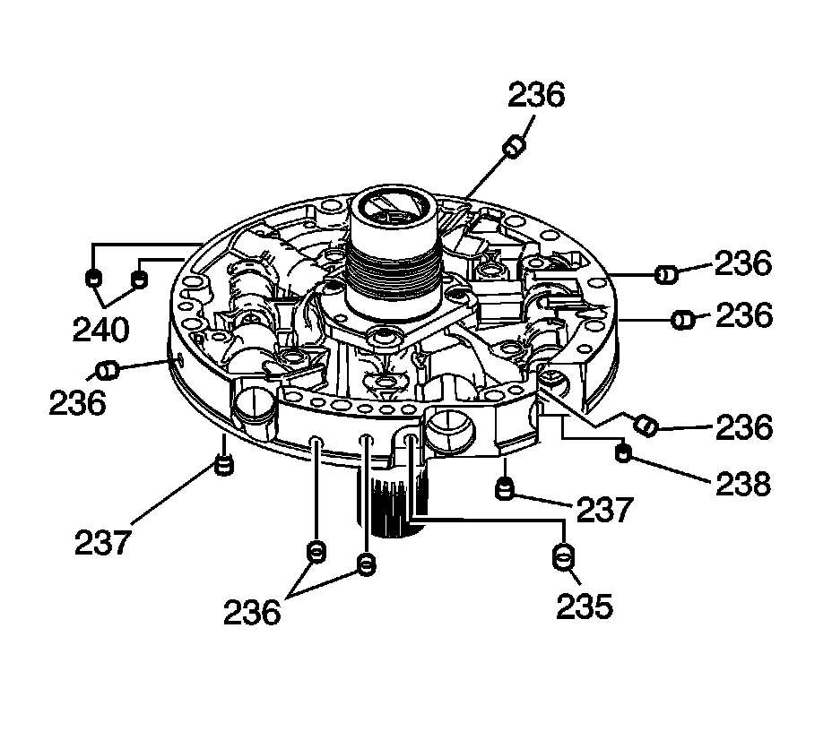
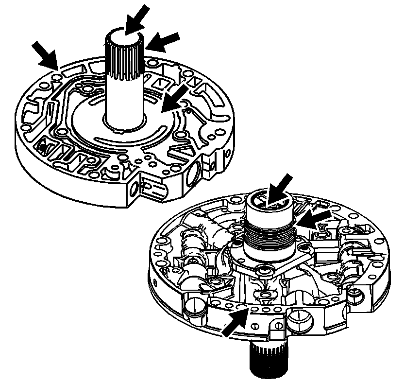
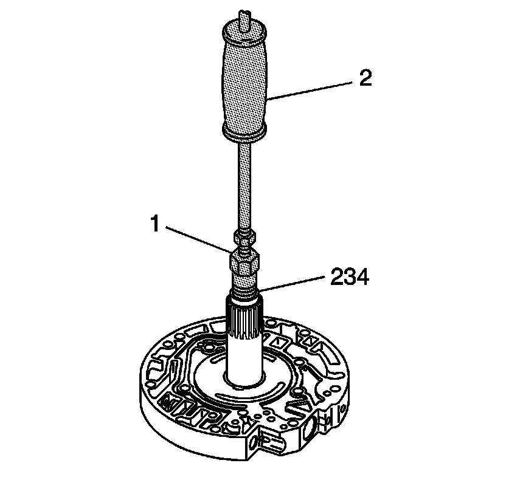
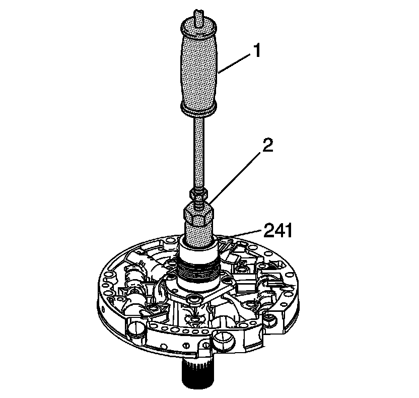
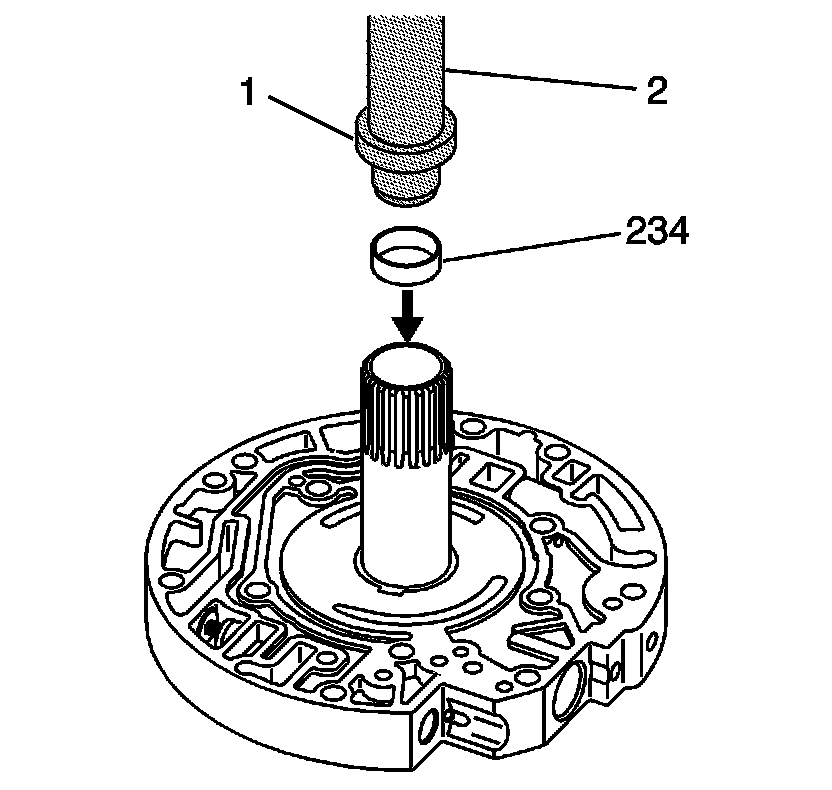
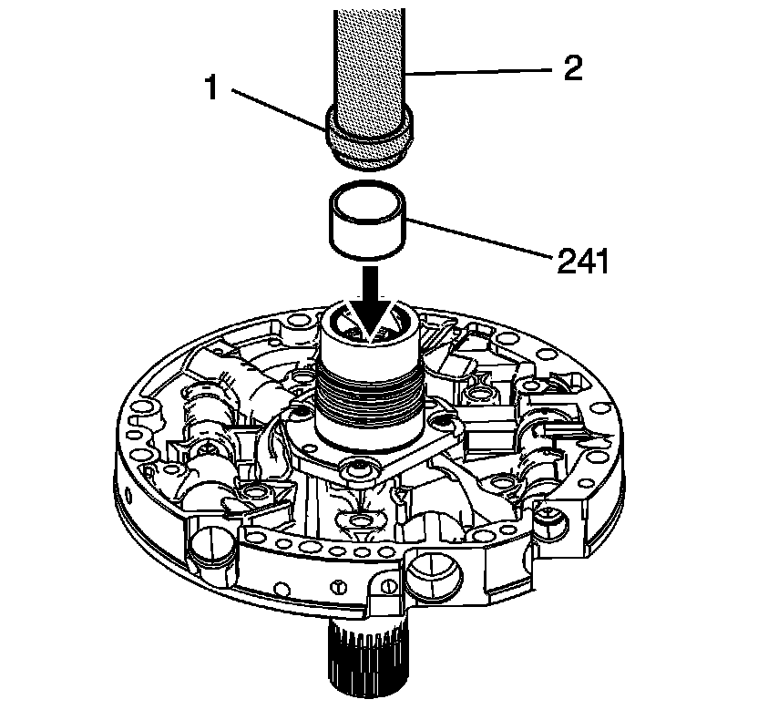

Oil Pump Stator Shaft Bushing Replacement
Oil Pump Stator Shaft Bushing Replacement
Tools Required
^ J 7004-A Universal Remover
^ J 8092 Universal Driver Handle - 3/4 in - 10
^ J 21465-01 Bushing Service Set
^ J 25019-14 Bushing Installer
^ J 34196-B Transmission Bushing Service Set
Removal Procedure

1. Inspect the pump cover, all check valve retainer and ball assemblies (237), cup plugs (235, 236) and orificed cup plugs (238, 240).

2. Inspect the pump cover for the following conditions:
^ Worn or damaged bushings
^ Foreign material or debris
^ Porosity
^ Scored or irregular mating faces
^ Cross channel leaks

3. Using the J 21465-15 (1) with the J 7004-A (2), remove the stator shaft front bushing (234).

4. Using the J 25019-14 (2) with the J 7004-A (1), remove the stator shaft rear bushing (241).
Installation Procedure

1. Using the J 21465-2 (1) and the J 8092 (2), install a new stator shaft front bushing (234).

2. Using the J 34196-2 (1) which is part of kit J 34196-B and the J 8092 (2), install the stator shaft rear bushing (241).